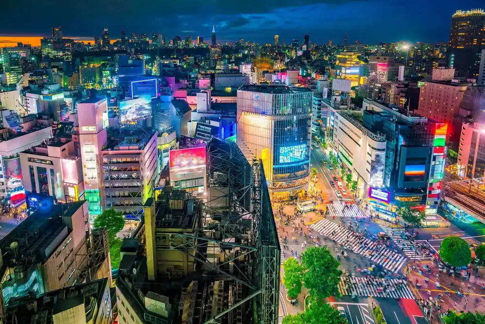

History
Explore how Japan has evolved, comparing its ancient traditions with modern advancements in government, society, economy, and culture.
Ancient History
| Aspect | Details |
|---|---|
| Government and Political Systems | Japan was governed by a feudal system, primarily under the rule of shoguns who held the real power, while the emperor was a symbolic leader. Power was decentralized, distributed among the samurai and feudal lords (daimyo), and society was structured around loyalty to one's lord. |
| Social Structure | Society was highly stratified, with strict social classes. The samurai were at the top, followed by farmers, artisans, and merchants. This hierarchy dictated daily life and social interactions, with limited social mobility. |
| Economy and Industry | The economy was predominantly agrarian, centered on rice farming and local production. Trade was restricted, and wealth was concentrated among feudal lords. |
| Cultural Practices | Culture was rooted in tradition, with strong influences from Shintoism, Buddhism, and Confucian values. Arts such as tea ceremonies, flower arranging (ikebana), calligraphy, and classical theater like Noh and Kabuki were widely practiced. |
| Foreign Relations and Military | Isolationist policies, especially during the Edo period (1603-1868), limited Japan’s interaction with other nations. Trade and diplomacy were highly restricted, with only limited contact through specific foreign ports. |

Modern History
| Aspect | Details |
|---|---|
| Government and Political Systems | The Meiji Restoration in 1868 abolished feudalism, centralizing power under the emperor and establishing a constitutional monarchy. Today, Japan has a democratic government with an elected parliament (Diet) and a prime minister, with the emperor serving as a ceremonial figure. |
| Social Structure | Social mobility has increased significantly, and the rigid class system has dissolved. Modern Japan values education and hard work, and individuals can pursue various careers regardless of their family background. |
| Economy and Industry | Rapid industrialization started in the Meiji period, transforming Japan into a global economic leader by the mid-20th century. The economy is now diverse, including automotive, electronics, and technology sectors, with a focus on international trade. |
| Cultural Practices | Modern Japanese culture blends tradition with new trends. Traditional arts are still practiced, but contemporary culture also includes anime, manga, modern fashion, and music genres. Japan is a cultural trendsetter worldwide. |
| Foreign Relations and Military | Japan opened to the world in the mid-19th century and quickly integrated Western technology and ideas. Following WWII, Japan adopted a pacifist constitution, focusing on diplomacy and economic partnerships rather than military expansion, though it maintains a Self-Defense Force for security. |